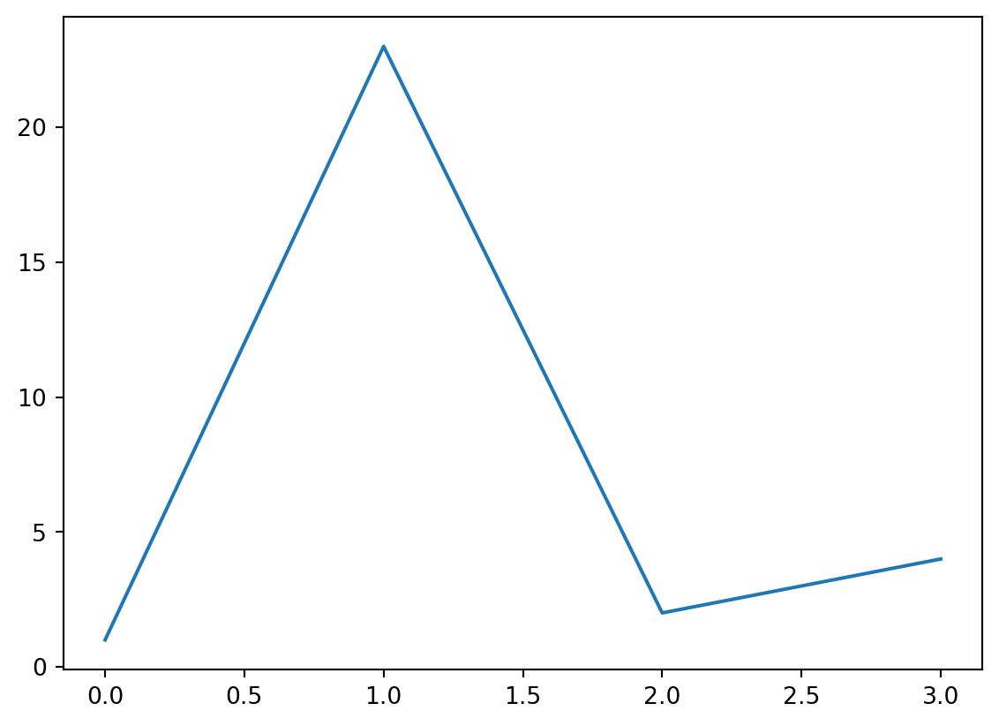
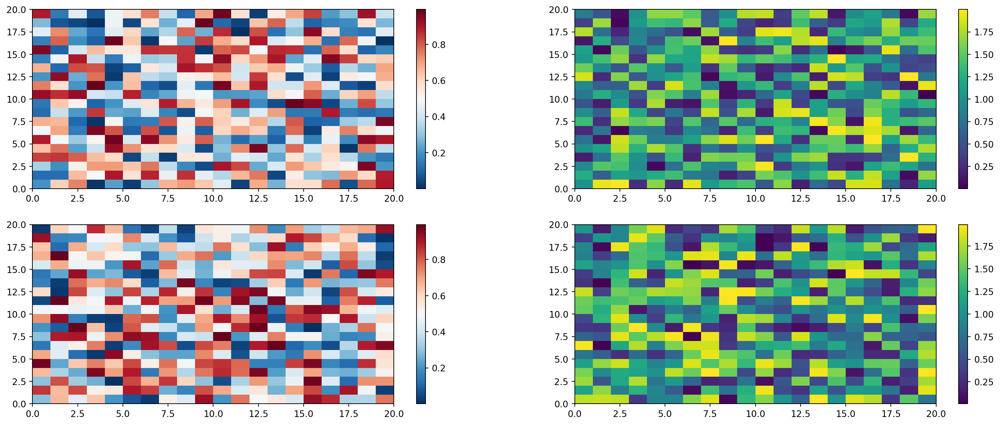

Code
import matplotlib.pyplot as plt
plt.plot([1,23,2,4])
plt.show()

See Figure 1 in Section 5 for a demonstration of a simple plot.
See Equation 1 to better understand standard deviation.
\[ s = \sqrt{\frac{1}{N-1} \sum_{i=1}^N (x_i - \overline{x})^2} \tag{1}\]
Knuth says always be literate [@knuth1984].
Einstein’s theory of special relatively that expresses the equivalence of mass and energy: \(E = mc^{2}\) \[F=ma\]
Note that there are five types of callouts, including: note, tip, warning, caution, and important.
Colorbars indicate the quantitative extent of image data. Placing in a figure is non-trivial because room needs to be made for them. The simplest case is just attaching a colorbar to each axes:1.
import matplotlib.pyplot as plt
import numpy as np
fig, axs = plt.subplots(2, 2)
fig.set_size_inches(20, 8)
cmaps = ['RdBu_r', 'viridis']
for col in range(2):
for row in range(2):
ax = axs[row, col]
pcm = ax.pcolormesh(
np.random.random((20, 20)) * (col + 1),
cmap=cmaps[col]
)
fig.colorbar(pcm, ax=ax)
plt.show()
See the Matplotlib Gallery to explore colorbars further↩︎